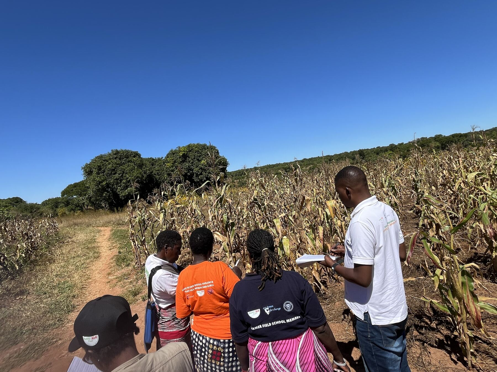

Our mission
We exist to develop, strengthen and build capacity of the agricultural based SMEs in order to feed into a sustainable climate smart agricultural production and improve food and nutrition security impacting into the farming community.
Since 2007 we have helped smallholder farmers and rural enterprises across Zambia grow, trade and thrive.
Nutri-Aid Trust (NAT) is a not-for-profit organisation established on 7 July 2007 and headquartered in Lusaka. It is registered with PACRA and has worked in provinces across Zambia.
Rural farmers often have no nearby supply of affordable inputs, and too little knowledge of improved and climate-smart methods or of managing money. The result is costly production and persistent poverty. NAT was created to close those gaps.
We are a high-impact, low-cost local organisation, known for integrity, efficient delivery and a passion for community development.
See our projects
We exist to develop, strengthen and build capacity of the agricultural based SMEs in order to feed into a sustainable climate smart agricultural production and improve food and nutrition security impacting into the farming community.
A leading local organisation sustainably providing enterprise development to agricultural SMEs in the region.
Helping communities manage climate risks to their livelihoods and food security.
Working with land, water and trees so that farming and ecosystems both thrive.
Socio-economic development that turns smallholder farming into a living.
Savings groups and financial literacy, especially for women.
Agro-dealers and rural SMEs that supply inputs and buy farmers’ produce.
Women, youth and marginalised groups at the centre of how we design and deliver.
Our smallholder farmers include women, youth and marginalised groups, along with the rural agro-dealers who supply them.
Gwembe, Namwala, Choma and Zimba
Mumbwa and Kapiri-Mposhi
Kaoma and Mongu
Nyimba, Petauke, Katete, Chipata and Lundazi
We have also worked in Northern, Muchinga, Copperbelt, North-Western and Lusaka provinces.
Our Strategic Plan 2021–2025 sets out how we strengthen agro-dealers and rural enterprises, improve nutrition and help communities adapt to a changing climate.
We are grateful to the organisations that have backed our work.
Partnerships, funding, volunteering or a conversation: we would like to hear from you.
Get in touch